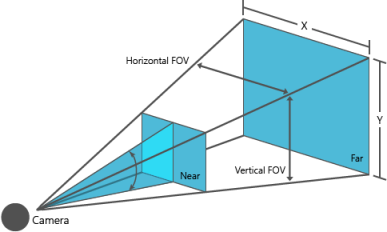
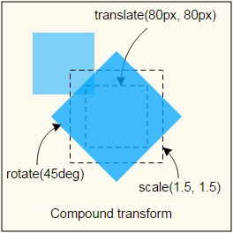
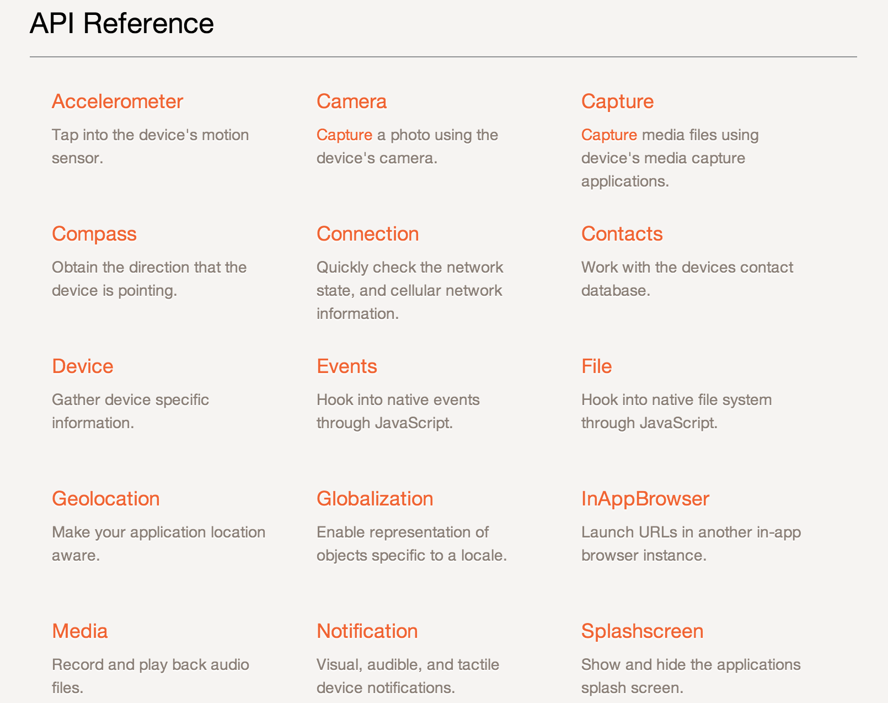
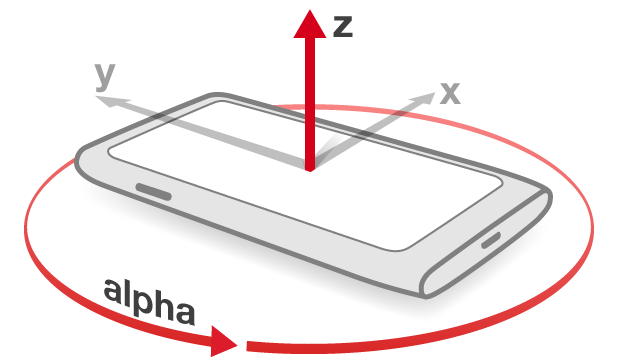
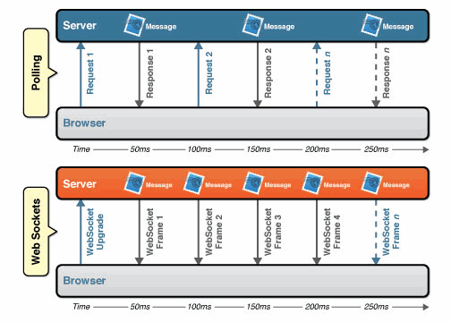
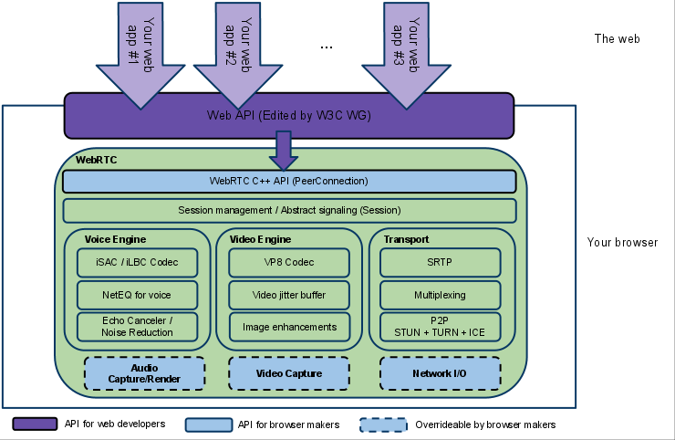

HTML5 and its future - Part I
Created by Leijun Yang
Who is this guy?

- 会编程序的猪
- http://weibo.com/u/1954880174
- https://github.com/sdd330
Is this about Native vs HTML5?

Let's talk about my first web page
Not so bad ...
Old generations websites
- HTML pages build by web designers one by one
- Read-only, non-interactive
- No multimedia support (like sounds or videos)
- Not possible to build applications like games
- ...
How we build the next generation web?
HTML5 technologies you’ve heard of?
HTML5 technologies
- Semantics
- 2D/3D Graphics & Effects
- Styling
- Device Access
- Multimedia
- Connectivity
- Offline & Storage
- Performance & Integration
Agenda - Part I
- Semantics
- 2D/3D Graphics & Effects
- Styling
- Device Access
Semantics
- New semantic elements
Semantic Elements

Template Element
2D/3D Graphics & Effects
- Canvas
- WebGL
Canvas smiley
var canvas = document.getElementById('canvas');
var ctx = canvas.getContext('2d');
ctx.beginPath();
ctx.arc(75,75,50,0,Math.PI*2,true); // Outer circle
ctx.moveTo(110,75);
ctx.arc(75,75,35,0,Math.PI,false); // Mouth (clockwise)
ctx.moveTo(65,65);
ctx.arc(60,65,5,0,Math.PI*2,true); // Left eye
ctx.moveTo(95,65);
ctx.arc(90,65,5,0,Math.PI*2,true); // Right eye
ctx.stroke();
Demo
WebGL
WebGL cube
https://developer.mozilla.org/en-US/docs/Web/WebGLthree.js

var scene = new THREE.Scene(); // Creating the scene
var aspect = window.innerWidth / window.innerHeight;
var camera = new THREE.PerspectiveCamera( 75, aspect, 0.1, 1000 );
var renderer = new THREE.WebGLRenderer();
renderer.setSize( window.innerWidth, window.innerHeight );
document.body.appendChild( renderer.domElement );
var geometry = new THREE.CubeGeometry(1,1,1); // Add one cube
var material = new THREE.MeshBasicMaterial( { color: 0x00ff00 } );
var cube = new THREE.Mesh( geometry, material );
scene.add( cube );
Demo
voxel.js
- Game engine based on WebGL
Build your own Minecraft?
http://voxeljs.com/voxel spider game
http://substack.net/projects/voxel-spider/
spider.position.y = 200;
spider.position.x = Math.random() * 300 - 150;
spider.position.z = Math.random() * 300 - 150;
spider.on('block', function () { spider.jump() });
spider.notice(substack, { radius: 500 });
spider.on('notice', function (player) {
spider.lookAt(player);
spider.move(0, 0, 0.5);
});
Styling
- CSS3
CSS Modules and Snapshots
http://www.w3.org/TR/#tr_CSS
CSS3 Transforms

CSS3 Animations and Transitions
One Animation Example
CSS3 Environment Media Features?
Media Queries Level 4: light-level
http://dev.w3.org/csswg/mediaqueries4/#mf-environmentAdvertisement by Taobao


Device Access
W3C Device API
http://www.w3.org/2009/dap/Phonegap
Device Orientation API

Capture Device Orientation
function eventListener (event) {
var alpha = event.alpha;
var beta = event.beta;
var gamma = event.gamma;
}
window.addEventListener('deviceorientation', eventListener, false);
Car Game
Media Capture
- getUserMedia
Access to user's camera
function successCallback(stream){
video.src = window.URL.createObjectURL(stream);
}
function errorCallback(e){
console.error(e);
}
var params = {audio: true, video: true};
navigator.getUserMedia(params, successCallback, errorCallback);
A Real Case in Tmall
http://www.tmall.com/go/market/main/zhubao.php
Webcam Toy
http://webcamtoy.com/app/HTML5 Face Tracking
http://shinydemos.com/facekat/AR with google glass?
Virtual Fitting Room
Part I Summary
Open Discussion
Revisit
Agenda - Part II
- Offline & Storage
- Multimedia
- Connectivity
- Performance & Integration
Offline & Storage
- Application Cache
- IndexedDB
- WebStorage
- ...
Why we need this?
Reactive to Proactive
Application Cache
<html manifest="manifest.appcache">
CACHE MANIFEST
CACHE:
index.html
../css/main.css
../js/lib/ga.js
../favicon.ico
FALLBACK:
/ offline.html
NETWORK:
*
Local Storage
Service Worker
http://jakearchibald.com/2014/service-worker-first-draft/Multimedia
- Audio and Video
Web Audio
Interactive Audio
http://airtightinteractive.com/demos/js/reactive/Web Video
Video Element
Media Source Extensions
Dash.js
Connectivity
- WebSocket
- WebRTC
WebSocket: Push instead of Pull
WebRTC
Peer Connection
Data Channel
Performance
Web Performance Working Group
- Resource Timing
- Async Scroll
- Display Performance
var loadTiming = performance.timing;
var resources = performance.webkitGetEntriesByType("resource");